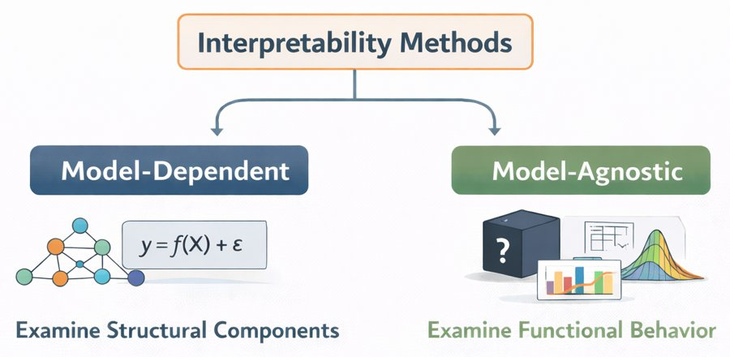
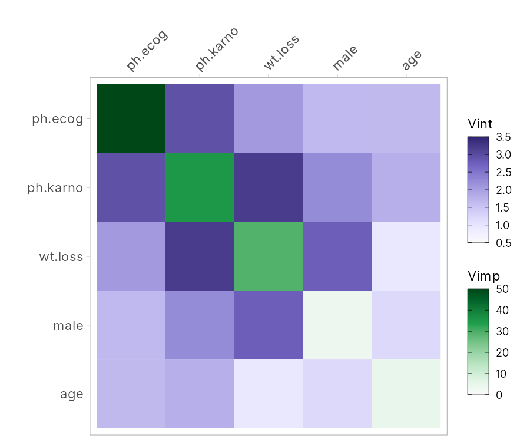
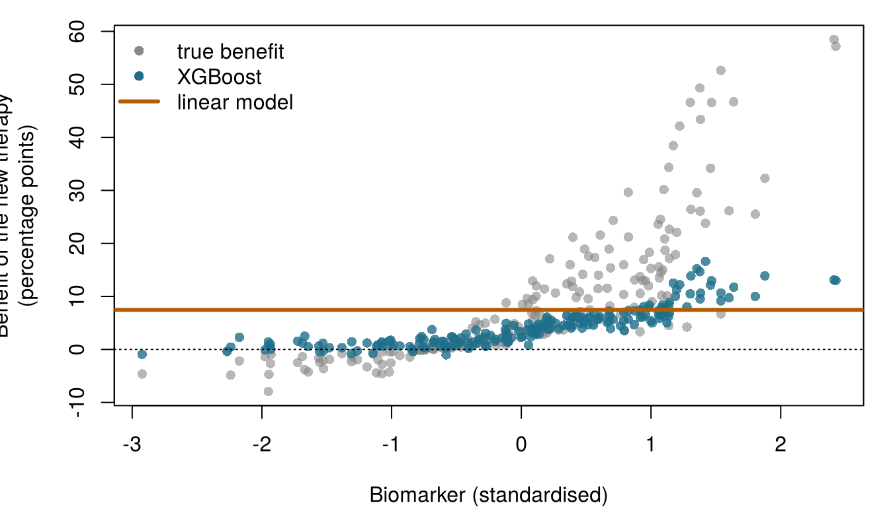
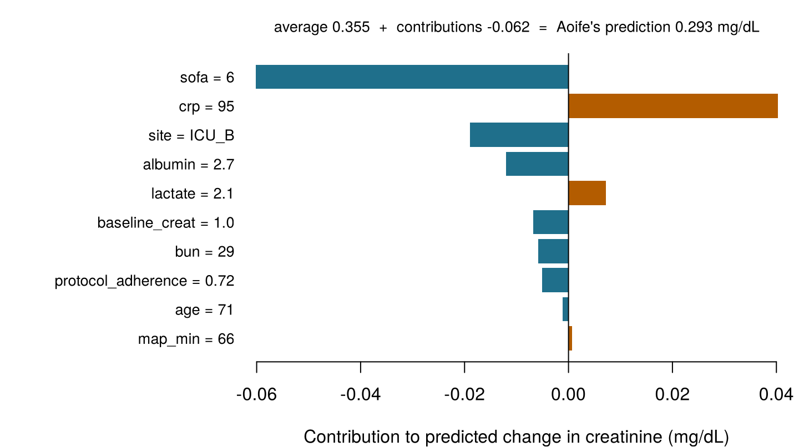

| Outcome | Model | Predictors | Test MAE | Test R² | Test AUC | Test Brier |
|---|---|---|---|---|---|---|
| Change in creatinine (mg/dL) | Linear regression (OLS), Chapter 4 | P10 | 0.141 | 0.656 | n/a | n/a |
| Change in creatinine (mg/dL) | Random forest (500 trees), Chapter 6 | P10 | 0.153 | 0.587 | n/a | n/a |
| AKI | Logistic regression (unpenalised), the headline model, Chapter 5 | P5 | n/a | n/a | 0.855 | 0.149 |
| AKI | Random forest classifier (500 trees), Chapter 6 | P5 | n/a | n/a | 0.838 | 0.158 |
12 Interpretable and explainable AI
Each question below is about a prediction model. Is it a question about the whole model, across all patients (global), or about one patient’s prediction (local)? Take your best guess: the chapter explains both.
| Question | Your label |
|---|---|
| Which features does the Ward 7 forest rely on most, over all patients? | |
| Why is Aoife's predicted risk 49 %? | |
| On average, how does the predicted follow-up time of lung-cancer patients change as their weight loss increases? | |
| Would Aoife's predicted risk fall below 25 % if her blood pressure were higher? |
How to use this chapter
Starting here?
This chapter explains models built in earlier chapters. In brief:
- Model and prediction (Definition 1.3). A model \(\hat f\) turns the features \(\mathbf{x}\) of a patient into a prediction \(\hat y = \hat f(\mathbf{x})\). It is fitted on a training set and judged on a test set it has never seen (Section 1.8, Definition 1.9).
- Coefficients (Chapter 4). A linear model predicts \(\hat y = \beta_0 + \beta_1 x_1 + \dots + \beta_p x_p\); \(\beta_j\) is the change in the prediction when \(x_j\) rises by one unit and the other features stay fixed. Lasso shrinks some coefficients to exactly zero.
- Logistic regression and odds ratios (Chapter 5). The logistic model is linear on the log-odds scale; for Aoife it gives a risk of acute kidney injury (AKI) of 49 %. In Chapter 1 the Ward 7 team decided that the bundle is worth starting whenever the risk is above 0.25.
- Trees, random forests and boosting (Chapter 6). A tree predicts with a sequence of if–else questions; a forest averages hundreds of trees grown on bootstrap samples; boosting adds small trees one after another. Ensembles predict better but cannot be read. Impurity importance summarises how much each feature helped the trees’ splits.
- Neural networks (Chapter 7) learn layers of features and are the least readable models of all; Bayesian models (Chapter 8) give a whole distribution of plausible models instead of one.
- Prediction is not causation (Section 1.10). A feature can predict an outcome without causing it; on Ward 7, severity confounds the apparent effect of protocol adherence.
| Example | Who or what | Outcome | Faces you will meet |
|---|---|---|---|
| 1 Ward 7 ICU | 1 250 ICU patients in 4 hospitals | change in creatinine over 48 h (acute kidney injury if ≥ 0.3 mg/dL) | Aoife (71, sepsis, borderline risk), Tomás (54, low risk), Priya (38, high risk); Dr Emma Walsh; Seán, the pharmacist |
| 2 ONCO-1 trial | 1 000 patients randomised to chemotherapy or not | tumour shrinkage (%) | patients #0042 and #0917 |
| 3 HomeBeat | 500 people wearing a smartwatch at home | stress score, deterioration event | Lena |
| 4 CellWorks | 420 production batches of a cell therapy | potency score | batch CW-118 |
All four datasets are simulated and can be downloaded from the data appendix. The full introduction is in Section 1.1.
This chapter is about understanding what a fitted model does. You will meet two families of methods (those that read the model’s own structure and those that probe it from outside) and use them to answer global questions (what does the model rely on, and how?) and local ones (why this prediction, and what would change it?). It has thirteen sections and a Lab, nine quick checks, three “Try it” widgets, a challenge and three coding missions in R and Python. Allow about two hours. The heaviest computations (forests, boosting, BART, thousands of model evaluations) were done in advance; the widgets and missions use their results or small models that run in your browser.
Notation at a glance (for lookup only)
| Symbol | Meaning | Section |
|---|---|---|
| \(\hat f\) | a fitted model, treated as a function we can query | Section 12.1 |
| \(\mathcal{L}(\hat f, D)\) | error of \(\hat f\) on data \(D\) (here the mean absolute error, MAE) | Section 12.6 |
| \(D^{(j,m)}\) | the data with column \(j\) shuffled for the \(m\)-th time, \(m = 1, \dots, N_s\) | Section 12.6 |
| \(\text{imp}_j\) | permutation importance of feature \(j\) | Section 12.6 |
| \(\mathbf{x}_S\), \(\mathbf{x}_C\) | the features of interest (set \(S\)) and all the others (its complement \(C\)) | Section 12.7 |
| \(\hat f_S(\mathbf{x}_S)\) | partial dependence function | Section 12.7 |
| \(\hat f^{(i)}_S(\mathbf{x}_S)\) | individual conditional expectation (ICE) curve of patient \(i\) | Section 12.7 |
| \(H_{jk}\) | Friedman–Popescu interaction strength of features \(j\) and \(k\) | Section 12.8 |
| \(v(S)\), \(\phi_j\), \(\phi_0\) | value of a coalition \(S\), Shapley value of feature \(j\), baseline prediction | Section 12.9 |
The full list is on the notation page.
12.1 Why explain a model?
In the chapters so far we judged models mostly by how well they predict. In science, medicine and regulation, predictive accuracy alone does not suffice. A model’s output enters an argument (“this patient is at high risk because…”), a decision (start the bundle or not) and a chain of accountability (who answers if it goes wrong). Its behaviour must therefore be accompanied by representations that people can examine, compare and criticise.
Definition 12.1 (Interpretability and explainability) A model is interpretable when a person can understand how it works from its structure: a short linear equation, a small tree, a points-based score. Explainability refers to methods that build a separate, simpler description of a model’s behaviour (an importance ranking, a curve, a list of contributions for one patient), usually for models that are not interpretable in themselves. Both are judged relative to an audience, a context and a purpose: there is no explanation that is adequate for everyone (Doshi-Velez and Kim 2017; Lipton 2018; Molnar 2022).
Interpretability is relational: it is not a property of an algorithm alone. A model is interpretable to someone, for something. What counts as an adequate explanation in methodological research may differ from what Emma needs at the bedside, what Aoife’s son needs to trust the team, or what a regulator needs to audit a device (Figure 12.1).
![Illustration of a stone bridge labelled interpretability. On the left, a predictive model: a network diagram, the equation y equals f of X plus epsilon, and a complex three-dimensional surface labelled complex output. On the right, human interpretation in three settings: scientific research, clinical practice, and policy and regulation. The bridge's beam reads context, audience, epistemic objective, and under it are three panels: explanation, comparison and evaluation. Below, literacy runs from basic to advanced, and logic is made of context and symbols.](images/interpretable_ai.jpg)
It helps to see an explanation as an act of communication. Every explanation has a source (the fitted model), a message (some representation of it) and a receiver (a person who interprets it within their own conceptual framework). In Shannon’s account of communication, no message is transmitted without being encoded and decoded (Shannon 1948). A model encodes its knowledge in a form people cannot read directly: hundreds of trees, thousands of weights, a posterior distribution over functions. An explanation method re-encodes part of that knowledge for a human receiver. We can write this as a transformation \(\mathcal{T}\) that takes a fitted model \(\hat f\) and some data \(D\) and returns a representation \(\mathcal{R}\):
\[ \mathcal{T}(\hat f, D) \longmapsto \mathcal{R}. \qquad(12.1)\]
The representation \(\mathcal{R}\) can be a list of numbers (importance scores), a curve (partial dependence), a matrix (interaction strengths) or a set of contributions for one patient (Shapley values). It never reproduces the whole model; it keeps some features and drops others. Two consequences run through the whole chapter. First, every explanation is a simplification and can mislead if the part it drops was the part that mattered. Second, Equation 12.1 depends on \(D\): the same model explained with different data can tell a different story.
This view has a long history in science. Models are not only instruments for prediction but also representational frameworks: a linear regression states relationships through coefficients under explicit assumptions, a logistic regression through log-odds, a tree through a recursive partition of the patients. Classical statistical models were chosen partly because their parameters had a direct meaning. As machine learning moved to forests, boosting and neural networks, accuracy improved and that direct meaning was lost, so interpretation needed methods of its own. Those methods are best seen as meta-modelling operations: they take a fitted model as input and return a structured summary of its behaviour, by inspecting its structure or by perturbing its inputs in a controlled way, usually as a picture designed to be examined and compared (Molnar 2022). Designing them always involves trade-offs between fidelity to the fitted model, robustness to sampling noise, computational cost and clarity for the intended audience.
Why bother? Explanations serve four purposes in health care: debugging (a model that relies on a hospital’s identifier, or on a feature recorded after the outcome, can be caught: the “too good to be true?” checks of Chapter 6); scientific insight (which biological or clinical factors carry the signal?); trust and contestability (a patient, a clinician or a court can question a recommendation); and regulation, which in Europe now asks explicitly for output that users can interpret and for human oversight of high-risk systems. Section 12.2 looks at each of these uses in turn, starting with the law.
There is also a strong argument against relying on after-the-fact explanations at all. When the stakes are high, Rudin (2019) argues, we should prefer models that are interpretable by design (short scores, sparse linear models, small trees) whenever they predict about as well, rather than build a black box and then explain it with a second, approximate model. Keep this argument in mind: on Ward 7 the readable models are at least as accurate as the forests (Table 12.1). For the change in creatinine, the linear regression (OLS) of Chapter 4 still has the lowest test MAE of the two, 0.141 mg/dL against 0.153 for the random forest of Chapter 6; for AKI, the logistic model of Chapter 5 has a slightly higher AUC than the forest classifier. Both can be read directly.
The same Ward 7 forest is explained to three audiences: a data scientist, Emma, and Aoife’s son. Which statement fits the idea that interpretability is relational?
12.2 Why explanations matter: regulation and other uses
Look again at Figure 12.1. On the right-hand bank stand three settings (scientific research, clinical practice, and policy and regulation), and each sends a different request across the bridge. A regulator wants evidence that a device is safe and that its users can oversee it; a clinician wants to know whether tonight’s number makes sense for this patient; a scientist wants to know what the model has learned about the disease. We start with the law, because in Europe the law now says something explicit about explanations, and then turn to the other uses.
12.2.1 What the law asks for
The AI Act. Software that provides information used to take diagnostic or therapeutic decisions is a medical device of at least class IIa under classification Rule 11 of the Medical Device Regulation (MDR), and so needs assessment by a notified body (European Parliament and Council of the European Union 2017, Annex VIII, Rule 11). The AI Act classifies as high-risk any AI system that is, or is a safety component of, a product covered by the laws listed in its Annex I (the MDR and the regulation on in vitro diagnostic devices among them) when that product needs such a third-party assessment (European Parliament and Council of the European Union 2024, Article 6(1) and Annex I). Most clinical prediction models placed on the market, including an AKI risk score like the one on Aoife’s screen, are therefore high-risk AI systems (Chapter 18 walks through the classification). Three articles of the Act concern explanation directly.
- Article 13, transparency and provision of information to deployers. A high-risk system must be designed so that its operation is “sufficiently transparent to enable deployers to interpret a system’s output and use it appropriately”. Its instructions for use must state its capabilities and limitations and, where applicable, the technical characteristics that “provide information that is relevant to explain its output” (European Parliament and Council of the European Union 2024, Article 13(1) and 13(3)(b)(iv)). The deployer is the hospital; the people who interpret are Emma and Seán.
- Article 14, human oversight. The people who oversee the system must be able to understand its capacities and limitations, to remain aware of the tendency to over-rely on its output (automation bias), to interpret the output correctly, taking into account the interpretation tools and methods available, and to disregard, override or stop it (European Parliament and Council of the European Union 2024, Article 14(4)). Explanation methods are named as an aid to oversight, not as a replacement for it.
- Article 86, right to explanation of individual decision-making. A person affected by a decision that a deployer took on the basis of a high-risk system’s output, and that produces legal effects or similarly significantly affects them in a way they consider adverse to their health, safety or fundamental rights, has the right to obtain from the deployer “clear and meaningful explanations of the role of the AI system in the decision-making procedure and the main elements of the decision taken” (European Parliament and Council of the European Union 2024, Article 86(1)). Read the scope carefully: the article covers the high-risk uses listed in Annex III (for example, systems that decide eligibility for public health-care services or triage emergency patients), not the medical devices that are high-risk through Annex I. Aoife’s son’s question is a fair one, but it is answered by good clinical practice and by the information that Articles 13 and 14 require, not by Article 86.
None of these articles names a method. The Act asks for an outcome, output that its users can interpret and oversee, and leaves the means to the provider. Its obligations apply in stages (European Parliament and Council of the European Union 2024, Article 113).
Data protection. The GDPR gives everyone the right “not to be subject to a decision based solely on automated processing, including profiling”, that produces legal effects or similarly significantly affects them; where such decisions are allowed, the safeguards include at least “the right to obtain human intervention”, to express one’s point of view and to contest the decision (European Parliament and Council of the European Union 2016, Article 22(1) and 22(3)). Recital 71 adds the right “to obtain an explanation of the decision reached after such assessment”, and Articles 13 to 15 require “meaningful information about the logic involved”. Recitals are not binding in themselves, and lawyers disagree about how far these provisions amount to a right to an explanation of an individual decision (Wachter, Mittelstadt, and Floridi 2017). A risk score that Emma reads and weighs is not a decision “based solely” on automated processing: one more reason why the human in the loop must be real.
Medical devices. The MDR does not mention explainability as such, but it reaches the same place by other routes. The manufacturer must show that the device meets the general safety and performance requirements, including those for software (Annex I, Section 17), through a clinical evaluation (Article 61 and Annex XIV); describe its design, intended purpose, performance and risks in the technical documentation (Annex II); and give users information on its intended use, performance and limitations (Annex I, Section 23) (European Parliament and Council of the European Union 2017). A notified body reviewing a forest for AKI will want to know what it relies on, whether that is clinically plausible, and in which patients it fails: the questions of this chapter.
International guidance. The US Food and Drug Administration, Health Canada and the UK’s Medicines and Healthcare products Regulatory Agency published ten principles of Good Machine Learning Practice for Medical Device Development in 2021; two of them are that the focus is placed on the performance of the human–AI team, and that users are provided with clear, essential information (U.S. Food and Drug Administration, Health Canada, and Medicines and Healthcare products Regulatory Agency 2021). Their 2024 principles on transparency define it as the degree to which appropriate information about a device (its intended use, development, performance and, when available, its logic) is clearly communicated to the relevant audiences, and treat explainability as the degree to which that logic can be explained to a person (U.S. Food and Drug Administration, Health Canada, and Medicines and Healthcare products Regulatory Agency 2024). For medicines, the European Medicines Agency’s reflection paper on AI in the medicinal product lifecycle (2024) prefers transparent models; it accepts black-box models when developers show that transparent ones perform or generalise unsatisfactorily, but then expects a documented rationale, explainability methods wherever possible, and discussion of such applications with the agency through qualification or scientific advice (European Medicines Agency 2024).
12.2.2 Other uses of explanations
- Clinical adoption and trust. Clinicians are asked to act on a model’s output and to answer for the decision. An explanation that lets them check the output against what they know of the patient (Aoife’s lower-than-average SOFA score, for instance: see Section 12.9) supports trust where trust is deserved; an explanation that merely looks plausible can give false reassurance (Ghassemi, Oakden-Rayner, and Beam 2021).
- Debugging, leakage and shortcuts. The most practical use of all. In Chapter 3, genes 08, 14 and 19 of ONCO-1 turned out to be copies of the outcome; the forest of Chapter 6 put them at the top of its importance ranking (Section 12.6), which is how such a leak is spotted. Image models do the same with shortcuts: networks trained on chest X-rays learned the hospital’s markers or the way the image was taken instead of the lungs, and explanation methods helped to reveal it (Zech et al. 2018; DeGrave, Janizek, and Lee 2021; Geirhos et al. 2020).
- Fairness audits. Explanations help to ask why a model performs differently across groups. A widely used US algorithm predicted health-care costs as a proxy for health needs; because less was spent on Black patients with the same needs, it systematically underestimated how ill they were (Obermeyer et al. 2019). Checking what a model relies on (here, the choice of outcome itself) is part of any fairness audit.
- Scientific discovery. Interaction measures and ICE curves can point to effects worth testing, such as the benefit of a therapy that grows with a biomarker in Section 12.8. They generate hypotheses; confirming them needs designed studies (Chapter 13).
- Drug development and manufacturing. Models now screen compounds, select trial patients and monitor production. Under good manufacturing practice (GMP) every release decision must be justified and documented. If CellWorks used a model to flag batches like CW-118 before release, the quality team would need to see which process measurements drove the flag, check that they make sense, and record it. The European Commission’s draft GMP Annex 22 on artificial intelligence
- proposes exactly this for critical applications: record which features contributed to each classification during testing, log the model’s confidence, and have experts review whether the model relies on appropriate features (European Commission 2025).
- Regulatory science. Regulators and registration offices use interpretable models themselves. In pesticide risk assessment, interpretable machine learning on an expanded database of human in vitro dermal-absorption studies identified the key predictors of absorption and informed the default values used when no study is available (D. Sarti et al. 2025). Crop-variety registration offices have used random forests and Bayesian additive models to show applicants which genotype-by-environment effects drive yield and quality in official trials (D. A. Sarti et al. 2025).
| Audience | Typical question | Useful explanation | In this chapter |
|---|---|---|---|
| Patient or family (Aoife’s son) | Why this number for me, and what happens now? | A plain-language local explanation and the plan of care | Aoife’s contributions to her log-odds (Section 12.9) |
| Clinician (Emma) | Does this output make sense for this patient? When should I override it? | Local contributions checked against the chart; known limitations | Shapley values; what-if analysis and its caveats (Section 12.10) |
| Developer or auditor (Seán, the AI governance committee) | What does the model rely on? Is anything leaking? Is it stable? | Global importance on held-out data, PDP and ICE, interactions, uncertainty | Permutation importance, the ONCO-1 leak, VIVID, VSUP |
| Regulator or notified body | Is it safe and effective for its intended use, and can its users oversee it? | Documented intended use, data, performance by subgroup, limitations, design for oversight | The checklist of Section 12.12 |
| Scientist | What has the model learned about the disease or the process? | Interactions and effect shapes with their uncertainty, read as hypotheses | Therapy × biomarker (Figure 12.6); BART and bartMan (Section 12.11) |
A hospital buys a CE-marked class IIa AI tool that ranks ICU patients by their risk of AKI. Which statement about the AI Act is correct?
12.3 A map of the methods
Explanation methods are usually sorted along three axes. The first, which the first edition of this book used to organise the whole chapter, is what the method looks at (Figure 12.2).

Definition 12.2 (Model-specific and model-agnostic; global and local; intrinsic and post hoc) A model-specific (model-dependent, or embedded) method uses the internal structure of one kind of model: the coefficients of a linear model, the splits of a tree, the split counts of a forest: it examines structural components. A model-agnostic method needs only the ability to query the model (give it inputs, read its predictions), so it works for any model: it examines functional behaviour. A global explanation describes the model’s behaviour over a whole population; a local explanation describes one prediction for one individual. An intrinsic explanation comes from a model that is interpretable by design (a short linear equation, a small tree, a points score), so that the model is its own explanation; a post-hoc explanation is built after fitting, as a separate description of a model that cannot be read directly (Molnar 2022; Lipton 2018).
Model-specific methods are fast and faithful, because they read the model itself, but each works only for its own model class. Model-agnostic methods let us compare very different models with the same tools, at the price of many model evaluations and of a dependence on the data used to probe the model, especially when features are correlated (Hooker, Mentch, and Zhou 2021).
The three axes are independent. Impurity importance is model-specific, post hoc and global; Shapley values are model-agnostic, post hoc and local; the coefficients of the logistic model of Chapter 5 are model-specific and intrinsic, and give both a global explanation and (Section 12.9) a local one. The representations they produce also differ in form: numbers (importance scores), structured objects (an interaction matrix), functions (partial dependence curves) or geometric objects (an interaction network, a tree drawn as a diagram). Table 12.3 places the methods of this chapter on the map.
| Method | Specific or agnostic | Intrinsic or post hoc | Global or local | Question it answers | Section |
|---|---|---|---|---|---|
| Coefficients, odds ratios | specific (linear, logistic) | intrinsic | both | How much does the prediction change per unit of each feature? | Section 12.5 |
| Tree rules | specific (single tree) | intrinsic | both | Which questions lead to this prediction? | Section 12.5 |
| Impurity importance, gain | specific (tree ensembles) | post hoc | global | Which features did the trees split on most usefully? | Section 12.5 |
| Permutation importance | agnostic | post hoc | global | How much worse does the model get without this feature’s information? | Section 12.6 |
| Partial dependence (PDP) | agnostic | post hoc | global | How does the average prediction change as a feature varies? | Section 12.7 |
| ICE curves | agnostic | post hoc | local (one curve per patient) | Does the effect differ between patients? | Section 12.7 |
H statistic, VIVID (package vivid) |
agnostic | post hoc | global | Which features act together rather than additively? | Section 12.8 |
| Shapley values | agnostic | post hoc | local (and global when averaged) | How much did each feature push this prediction away from the average? | Section 12.9 |
| Counterfactual explanation | agnostic | post hoc | local | What is the smallest change that would change the prediction? | Section 12.10 |
BART inclusion proportions (package bartMan) |
specific (BART) | post hoc | global | How often do the posterior trees split on each feature, or on two features along one branch? | Section 12.11 |
| Value-suppressing uncertainty palette (VSUP) | display of any of the above | n/a | global | Which parts of an explanation are both large and reliable? | Section 12.11 |
12.4 A lung-cancer clinic, and a warning about time
To compare many models under the same tools we need a small dataset. Besides Ward 7, we use one from an oncology follow-up clinic. It is simulated (no real patient is described), inspired by a well-known dataset of patients with advanced lung cancer (Loprinzi et al. 1994), and small enough for thousands of model evaluations: 228 patients, five predictors and an outcome (see the data appendix).
age(years) andsex;ph.ecog: the ECOG performance status rated by the physician, from 0 (fully active) to 3 (in bed or chair for more than half the day) (Oken et al. 1982);ph.karno: the Karnofsky score, another physician-rated measure of the same thing on a 0–100 scale, where 100 is normal activity (Karnofsky and Burchenal 1949);wt.loss: weight lost in the previous six months (kg);time: days of follow-up, andstatus: whether the patient had died (dead) or was still alive (alive) when follow-up ended.
| patient_id | age | sex | ph.ecog | ph.karno | wt.loss | time | status |
|---|---|---|---|---|---|---|---|
| 1 | 68 | female | 3 | 46 | 11.3 | 30 | alive |
| 2 | 53 | female | 2 | 68 | 11.6 | 30 | dead |
| 3 | 64 | female | 1 | 80 | 6.3 | 133 | alive |
| 4 | 62 | female | 1 | 100 | 15.1 | 171 | alive |
| 5 | 57 | male | 1 | 80 | 24.3 | 30 | dead |
| 6 | 40 | female | 1 | 86 | 4.6 | 192 | alive |
Following the first edition of this book, we predict time from the five predictors with the models of Part II, fitted on 171 training patients and tested on the other 57 (Table 12.5).
| Model | Test RMSE (days) | Test MAE (days) |
|---|---|---|
| Average (no model) | 117.81 | 102.90 |
| Linear regression | 52.65 | 43.68 |
| Lasso | 53.30 | 45.01 |
| Tree (depth 4, chosen by CV) | 45.37 | 33.22 |
| Random forest | 39.67 | 30.76 |
| XGBoost | 40.92 | 32.41 |
| Neural network (2 hidden layers) | 43.34 | 32.71 |
The flexible models (the forest, boosting, the network and even a single tree) beat the linear models clearly (test MAE of about 31 days for the forest against 44 for linear regression). The reason is visible in the data: no patient has a time below 30 days (68 patients have exactly 30), so the relationship has a floor that no straight line can follow. To trust any explanation of these models, however, we must first be honest about what time is.
time is not survival time
Of the 228 patients, 135 (59 %) were alive when their follow-up ended. For them, time says only that they survived at least that long: their survival time is censored. Treating time as an ordinary number to predict, as we do here, counts a patient last seen alive at day 192 exactly like a patient who died at day 192, and so underestimates survival, most for patients in good condition, who are the most likely to be censored. What the models below predict is therefore days of recorded follow-up, not survival.
We keep this simplification because the dataset is small and complete and lets us compare many models with the same explanation tools, which is the point of this chapter. For real prognosis you would use methods built for censored outcomes, such as the Cox model (Cox 1972) or random survival forests (Ishwaran et al. 2008), and the explanation methods of this chapter apply to them in the same way. A good explanation of a model of the wrong outcome is still an explanation of the wrong outcome.
In the lung clinic, the permutation importance (below) says the forest relies heavily on ECOG performance status. Given that time is censored for most patients, what can you safely conclude?
12.5 Reading the model itself
12.5.1 Coefficients
Model-specific interpretation is most transparent in linear models, where the whole fitted structure is a list of coefficients. Table 12.6 shows the linear regression of time on the five predictors in the lung clinic, with each coefficient also expressed per standard deviation of its feature, so that features measured in different units can be compared.
| Feature | Coefficient | SE | Per SD | Without Karnofsky | |
|---|---|---|---|---|---|
| age | Age (per year) | -0.22 | 0.42 | -2.0 | -0.21 |
| male | Male sex | -9.46 | 7.80 | -4.7 | -11.67 |
| ph.ecog | ECOG (per level) | -72.17 | 9.54 | -67.1 | -100.37 |
| ph.karno | Karnofsky (per point) | 1.71 | 0.52 | 28.8 | n/a |
| wt.loss | Weight loss (per kg) | -7.68 | 0.79 | -38.8 | -7.37 |
Worse performance status (higher ECOG) and more weight loss go with shorter follow-up; a better Karnofsky score goes with longer follow-up; age and sex add little. So far, so readable. But look at the right-hand column: when the Karnofsky score is removed, the ECOG coefficient changes from -72.2 to -100.4 days per level. The reason is that ECOG and Karnofsky measure nearly the same thing (their correlation is -0.89). With both in the model, each coefficient answers a strange question (what if ECOG worsened while the Karnofsky score stayed the same?) about a combination of values that hardly exists. A coefficient is always interpreted holding the other features fixed, and its meaning changes when the other features change. Penalised models make the instability visible: the lasso of Chapter 4 may keep one of two correlated features and drop the other, almost by chance.
On Ward 7, the logistic model of Chapter 5 is the model Emma already uses. Its odds ratios (1.50 per SOFA point (Vincent et al. 1996), 1.35 per mmol/L of lactate, 0.96 per mmHg of the lowest mean arterial pressure, MAP) are a complete, global description of the model. We will see in Section 12.9 that, for a linear or logistic model, they also give an exact local explanation of Aoife’s risk, at no extra cost.
12.5.2 Tree rules
A single tree is its own explanation: a sequence of if–else rules that can be followed with a finger (Figure 12.3).

The first split is on ECOG performance status, and the next ones refine the prediction with ECOG again and with weight loss. The Karnofsky score does not appear at all, not because it does not matter, but because ECOG already carries almost the same information. Variables that appear early often matter a lot to the tree, but the position of a split is not a measure of importance: a feature that never appears at the root can still be used in many lower splits, and a correlated feature can take another’s place if the data change a little (the instability of Chapter 6).
12.5.3 Built-in importance of ensembles
Forests and boosted models cannot be read, but they keep a record of their own construction. The impurity importance of a forest adds up, over all trees, how much the splits on each feature reduced the error; XGBoost (Chen and Guestrin 2016) reports the same idea as gain. On Ward 7 (Table 12.7) both put SOFA first and blood urea nitrogen (BUN) second.
| Feature | Forest: impurity importance | XGBoost: share of gain |
|---|---|---|
| sofa | 0.2562 | 0.3400 |
| bun | 0.1381 | 0.1041 |
| baseline_creat | 0.1106 | 0.0924 |
| map_min | 0.1014 | 0.0678 |
| protocol_adherence | 0.0913 | 0.0551 |
| crp | 0.0847 | 0.0608 |
| albumin | 0.0809 | 0.0575 |
| lactate | 0.0583 | 0.0436 |
These built-in importances are quick and useful for screening, but they have three known weaknesses. They are computed on the training data, so they reward features the model used to fit noise; they favour features with many possible split points (continuous features over binary ones) (Strobl et al. 2007); and they say nothing about direction: a large value does not tell you whether more of the feature raises or lowers the prediction. Keep BUN in mind: we will see that its high rank is largely borrowed from the features it is correlated with.
In the lung clinic, removing the Karnofsky score from the linear model changes the coefficient of ECOG performance status a great deal. What is the best explanation?
12.6 Permutation importance
We now move to model-agnostic methods, which treat the model as a black box. The first is the simplest idea in the chapter: if the model relies on a feature, scrambling that feature should make its predictions worse. Scrambling a column (shuffling its values at random among the patients) keeps the feature’s distribution but breaks its link with the outcome and with the other features. The idea goes back to the random forests of Breiman (2001) and was generalised to any model by Fisher, Rudin, and Dominici (2019).
Definition 12.3 (Permutation importance) Let \(\mathcal{L}(\hat f, D)\) be the error of a fitted model \(\hat f\) on a dataset \(D\) (for example the mean absolute error on the test set), and let \(D^{(j,m)}\) be a copy of \(D\) in which the column of feature \(j\) has been shuffled at random, for the \(m\)-th of \(N_s\) times. The permutation importance of feature \(j\) is the average increase in error:
\[ \text{imp}_j = \frac{1}{N_s} \sum_{m=1}^{N_s} \mathcal{L}\big(\hat f, D^{(j,m)}\big) - \mathcal{L}\big(\hat f, D\big). \qquad(12.2)\]
A large positive value means that the model relies on feature \(j\); a value near zero means that it does not. For a score where higher is better (accuracy, AUC), the order of the two terms is reversed, so that importance is again original score minus shuffled score.
Notice the order in Equation 12.2: shuffled minus original. For an error, shuffling makes things worse, so the error goes up and the importance is positive. A small negative value happens by chance when a feature is useless (a lucky shuffle can do slightly better than the original); it means “no evidence that the model relies on this feature”, not “harmful”. Because each shuffle is random, we repeat it \(N_s\) times and look at the spread as well as the average.
Shuffle a feature yourself. Below are the 250 test patients of Ward 7 and two models from earlier chapters, both predicting the change in creatinine over 48 hours from the same ten predictors: the random forest of Chapter 6 (test MAE 0.153 mg/dL) and the linear regression (OLS) of Chapter 4 (0.141 mg/dL). Pick a feature and press Shuffle it once: its column is scrambled and the model’s test MAE is recomputed. Each dot is one shuffle; the bar is the average increase over the shuffles so far. (The 30 shuffles of each feature were computed in advance with scripts/precompute/ch12_explain.py; the button reveals them one at a time.) Target: shuffle at least four different features, then compare the two models.
Two things stand out. First, SOFA dominates in both models, followed by baseline creatinine and the lowest MAP: the same physiology seen through two very different models. Second, look for BUN: the forest’s impurity importance ranked it second (Table 12.7), but when it is shuffled on the test set the forest’s error rises much less than for SOFA, and less than for baseline creatinine or the MAP, and the linear model hardly notices. BUN is correlated with SOFA (r = 0.53) and with baseline creatinine (r = 0.36); the trees often split on it as a stand-in for them, which earns impurity credit during training, but its information is almost entirely available elsewhere. Permutation importance on new data is the more honest measure of what the model needs.
Permutation importance can also catch a leak. When the forest of Chapter 6 was trained on all ONCO-1 features, its three most important features were genes 08, 19 and 14, the genes that, by construction, are copies of the outcome (Table 12.8). An explanation that puts an implausible feature at the top is often the first sign that something is wrong with the data, not that a discovery has been made.
| Feature | Impurity importance |
|---|---|
| gene_08 | 0.2163 |
| gene_19 | 0.2141 |
| gene_14 | 0.1822 |
| dose_intensity | 0.1171 |
| treatment_no_chemo | 0.0969 |
In the lung clinic the three models broadly agree (Table 12.9): ECOG first, then the Karnofsky score and weight loss (in an order that differs between models), with age and sex negligible.
| Feature | Linear regression | Random forest | XGBoost |
|---|---|---|---|
| Age | 0.2 (0.2) | -0.1 (0.5) | -1.2 (0.6) |
| Male sex | 0.1 (0.7) | 0.1 (0.4) | 0.1 (0.4) |
| ECOG | 39.5 (5.9) | 41.4 (5.2) | 45.7 (5.8) |
| Karnofsky | 13.5 (3.1) | 26.0 (4.2) | 17.2 (3.3) |
| Weight loss | 19.3 (4.3) | 21.7 (3.4) | 23.1 (3.9) |
Permutation importance is easy to compute and to explain, but it has pitfalls that matter in clinical data.
- Correlated features share the credit, or lose it. Shuffling ECOG while leaving the Karnofsky score untouched creates patients who are “fully active” by one score and “disabled” by the other. The model is then asked about combinations it never saw, and its behaviour there is arbitrary (Hooker, Mentch, and Zhou 2021). Moreover, if the model can get ECOG’s information from Karnofsky, the importance of each may look smaller than the importance of the pair. Shuffle correlated features together (as we did with the four Ward 7 sites, shuffled as one feature) or report them as a group.
- It measures the model’s reliance, not the feature’s value in reality. A feature that one model ignores may be essential to an equally accurate model that uses it instead of a correlated partner. Fisher, Rudin, and Dominici (2019) propose looking at the whole set of good models (the Rashomon set) and reporting the range of importance across them.
- Test data, not training data. Computed on the training set, permutation importance rewards features the model used to memorise noise, just like impurity importance.
- It is not causal. A large importance says that the model’s predictions depend on the feature; it does not say that changing the feature in a patient would change the outcome.
A colleague computes permutation importance for a classifier using the AUC (where higher is better) and finds that shuffling lactate changes the AUC from 0.84 to 0.78. Another feature, age, gives an AUC of 0.845 after shuffling. Which reading is right?
Permutation importance by hand. The linear regression (OLS) of Chapter 4 for the change in creatinine, with its ten predictors, has been fitted on the Ward 7 training patients, and its test MAE (0.141 mg/dL, as in Chapter 4) is stored in mae_orig. Shuffle the SOFA column of a copy of the test set, recompute the MAE, and compute the permutation importance of SOFA (shuffled minus original). Fill in the blank with the code that shuffles the column.
sample(x) returns the elements of x in a random order.
test_perm$sofa <- sample(test_perm$sofa)rng.permutation(array) returns a shuffled copy of the array; use test_perm["sofa"].to_numpy().
test_perm["sofa"] = rng.permutation(test_perm["sofa"].to_numpy())R and Python use different random-number generators, so they shuffle differently and give different numbers (about 0.06 in R and 0.05 in Python). One shuffle gives one noisy number; in practice you repeat it 10–50 times and report the average and the spread, as the widget did. The Lab wraps this in a function that works for any model.
12.7 Partial dependence and ICE curves
Importance tells us which features matter, not how. Does predicted follow-up time fall steadily with weight loss, or only beyond some threshold? Does it fall in the same way for every patient? Two related tools answer these questions by querying the model on modified copies of the data.
Split the features into those of interest, \(\mathbf{x}_S\) (often just one feature), and all the others, \(\mathbf{x}_C\) (the complement). Now take every patient in the data, keep their own values of \(\mathbf{x}_C\), set \(\mathbf{x}_S\) to a chosen value, and ask the model for a prediction.
Definition 12.4 (Partial dependence and individual conditional expectation) The individual conditional expectation (ICE) curve of patient \(i\) shows how the model’s prediction for that patient would change if only \(\mathbf{x}_S\) changed: \[ \hat f^{(i)}_S(\mathbf{x}_S) = \hat f(\mathbf{x}_S, \mathbf{x}_{C,i}). \] The partial dependence function is the average of the ICE curves over the \(n\) patients: \[ \hat f_S(\mathbf{x}_S) = \frac{1}{n} \sum_{i=1}^{n} \hat f(\mathbf{x}_S, \mathbf{x}_{C,i}). \qquad(12.3)\] Plotted over a grid of values of \(\mathbf{x}_S\), these give the ICE curves and the partial dependence plot (PDP) (Friedman 2001; Goldstein et al. 2015).
The PDP is a population-level view: it shows whether the model has learned a roughly linear, a threshold-like or a more complex relationship, on average. The ICE curves show heterogeneity: when they are roughly parallel, the feature has the same effect for everyone and the PDP is a fair summary; when they fan out or cross, the effect depends on the patient’s other features: an interaction, which the average hides. Curves that start at different heights are hard to compare, so it helps to centre them: subtract from each curve its value at the left end of the grid, so that every curve starts at zero and shows only the change (Goldstein et al. 2015).
Explore the lung clinic models. Each thin line is one of the 171 training patients: the model’s predicted days of follow-up as one feature varies and everything else about the patient stays as it is (an ICE curve). The thick line is their average (the PDP). Dots along the bottom show the values actually observed. Choose a model and a feature, highlight a patient, and try the centred view. Target: switch on the centred curves for weight loss in one of the tree models, and compare with the linear model.
The three models agree on the direction of every effect: predicted follow-up falls as ECOG worsens and as weight loss grows, and rises with the Karnofsky score. They differ in shape. The linear model draws straight, perfectly parallel lines; it cannot do anything else. The forest and XGBoost draw steps (the signature of trees) that flatten towards the floor of 30 days: for a patient who is already predicted to be near the floor, more weight loss can hardly lower the prediction further. That is why their centred ICE curves fan out: the effect of weight loss depends on the rest of the patient. Age, which the importance ranking dismissed, gives nearly flat curves in every model.
Two cautions. First, a PDP evaluates the model at every grid value for every patient, including combinations that do not occur: weight loss of 25 kg in a fully active patient, or an ECOG of 3 with a Karnofsky score of 100. Where the data are thin (few dots at the bottom of the widget), the curve shows the model’s extrapolation, which may be pure artefact. When features are strongly correlated, as ECOG and Karnofsky are here, it is safer to use accumulated local effects (ALE), which average only over patients whose values are close to each grid point (Apley and Zhu 2020). Second, a flat PDP does not prove that a feature has no effect: opposite effects in two subgroups can cancel out in the average. The ICE curves are there to reveal that.
The centred ICE curves of a feature fan out widely, but its PDP is almost flat. What is the most likely explanation?
A point on the PDP by hand. A regression tree for days of follow-up has been fitted on the lung-clinic training patients. To compute the partial dependence at a weight loss of 20 kg, give every training patient a weight loss of 20 kg (keeping everything else), predict, and average. The code already computes the 171 ICE values at 20 kg; fill in the blank so that the last line returns the partial dependence.
The partial dependence is the arithmetic average of the 171 ICE values.
mean(ice20)NumPy’s function for the arithmetic average is np.mean.
np.mean(ice20)R’s rpart (Therneau and Atkinson 2023) and scikit-learn (Pedregosa et al. 2011) grow slightly different trees, so the two languages give different numbers. The recipe is the same.
12.8 Interactions: the H statistic and VIVID
Chapter 6 introduced interactions: the effect of one feature depends on the value of another. ICE curves can hint at them, but with many features we need a number. If a model is additive in features \(j\) and \(k\), their joint partial dependence is just the sum of the two separate ones, \(\hat f_{jk}(x_j, x_k) = \hat f_j(x_j) + \hat f_k(x_k)\), once each function is centred to have mean zero. The H statistic of Friedman and Popescu (2008) measures how far the model is from that:
\[ H_{jk}^2 = \frac{\sum_{i=1}^{n} \big[\hat f_{jk}(x_{ij}, x_{ik}) - \hat f_j(x_{ij}) - \hat f_k(x_{ik})\big]^2} {\sum_{i=1}^{n} \hat f_{jk}(x_{ij}, x_{ik})^2}. \qquad(12.4)\]
\(H_{jk}\) is the share of the joint effect of \(j\) and \(k\) that is not explained by their separate effects: 0 means no interaction, values near 1 mean that the pair acts almost only jointly. Because it is a ratio, it can be large when both the numerator and the denominator are tiny: a strong “interaction” between two features that hardly matter. The unnormalised version, the square root of the numerator divided by \(n\), stays on the scale of the prediction (here, days) and avoids that trap (Inglis, Parnell, and Hurley 2022).
VIVID (variable importance and variable interaction displays) puts both kinds of number in one \(p \times p\) matrix: importance on the diagonal, interaction strength off the diagonal (Inglis, Parnell, and Hurley 2022). The R package vivid, by the same authors, computes the matrix with vivi() (by default a model-agnostic permutation importance on the diagonal and the unnormalised H statistic off it) and draws it as a heatmap (viviHeatmap()) or as a network whose nodes are features and whose edges are interactions (viviNetwork()). The code below is what you would run on your computer for the lung clinic, as the first edition of this book did. It uses the R random forest of the Lab (package randomForest (Liaw and Wiener 2002), 300 trees, test MAE 38.6 days). This is not the scikit-learn forest of Table 12.5, which is fitted with different settings, but it tells the same story.
Running vivid and bartMan on your computer
vivid, bartMan and dbarts (which fits BART) (Dorie, Chipman, and McCulloch 2026) are R packages on CRAN: install.packages(c("vivid", "bartMan", "dbarts", "randomForest")). They do not run in the browser, so their code in this chapter is shown but not executed here; the figures were made with exactly this code by scripts/precompute/ch12_vivid_bartman.R (vivid 0.2.8, bartMan 0.1.1, dbarts 0.9.34). vivi() takes a few seconds. Fitting BART is quick, but extracting its trees for bartMan takes a minute or two. Neither package has a Python version: the Lab shows how to compute the same numbers with scikit-learn, or you can run the R code.
library(randomForest)
library(vivid)
lung <- read.csv("data/lung_sim_complete.csv")
lung$male <- as.integer(lung$sex == "male")
split <- read.csv("data/splits/lung_split.csv")
feats <- c("age", "male", "ph.ecog", "ph.karno", "wt.loss")
train <- lung[split$set == "train", c(feats, "time")] # vivi() uses every other column as a feature
set.seed(2026)
rf <- randomForest(time ~ age + male + ph.ecog + ph.karno + wt.loss, data = train, ntree = 300)
set.seed(2026)
viv <- vivi(data = train, fit = rf, response = "time", gridSize = 10,
importanceType = "agnostic", numPerm = 4)
viviHeatmap(mat = viv, angle = 45)
viviNetwork(mat = viv)
viviHeatmap()).

viviNetwork()).
vivid package. Green (diagonal; colour and size of the nodes): permutation importance, the increase in root mean squared error in days when a feature is shuffled in the training data. Purple (off-diagonal; edges): unnormalised H statistic, in days. The heatmap is reordered so that the most important and most interacting features come first.
| Pair | R forest (vivid): H, days | R forest: normalised H | scikit-learn forest: H, days | scikit-learn forest: normalised H |
|---|---|---|---|---|
| Karnofsky × Weight loss | 3.2 | 0.10 | 5.5 | 0.10 |
| ECOG × Karnofsky | 2.9 | 0.06 | 5.7 | 0.06 |
| Male × Weight loss | 2.8 | 0.13 | 1.3 | 0.04 |
| Male × Karnofsky | 2.2 | 0.12 | 1.0 | 0.03 |
| ECOG × Weight loss | 2.1 | 0.05 | 5.7 | 0.08 |
| Age × Karnofsky | 1.8 | 0.10 | 1.8 | 0.05 |
| Age × ECOG | 1.7 | 0.05 | 2.6 | 0.05 |
| Male × ECOG | 1.7 | 0.05 | 0.7 | 0.01 |
| Age × Male | 1.2 | 0.26 | 0.3 | 0.12 |
| Age × Weight loss | 0.9 | 0.05 | 1.5 | 0.05 |
Read the heatmap row by row. ECOG is the most important feature (49.8 days), then the Karnofsky score (35.1) and weight loss (29.1); age and sex hardly matter. Notice that vivid computes the importance on the data you give vivi() (here the training patients, as in the first edition), so, like any importance computed on training data, it can reward memorised noise (Section 12.6): age gets 4.9 days here, against nothing on the test patients (Table 12.9). The strongest interactions (Table 12.10) are Karnofsky × weight loss (3.2 days) and ECOG × Karnofsky (2.9), and in the network those three features form the heaviest triangle. The scikit-learn forest ranks the pairs among the three clinical scores at the top as well, and XGBoost gives Karnofsky × weight loss the largest normalised H of all (0.12).
Now look at age with male sex. Its normalised H is 0.26 in the R forest (the largest of all ten pairs) and 0.12 in the scikit-learn forest, as large as the strongest clinical pair; yet in days it amounts to 1.2 and 0.32 respectively: next to nothing, because neither feature matters. This is the trap described above, the reason to read the two numbers together, and the reason vivid uses the unnormalised H by default.
The first edition of this book reported a puzzle here. The simulation was said to contain an interaction between ECOG and weight loss, but the VIVID analysis pointed most strongly to weight loss with the Karnofsky score. Both readings are compatible with the data. ECOG and Karnofsky are correlated at -0.89, so a model can express the same pattern through either of them; adding an ECOG × weight-loss term to a linear model raises its \(R^2\) from 0.828 to 0.857, and adding a Karnofsky × weight-loss term instead gives 0.857. The data cannot tell the two interactions apart, and neither can any explanation method. Part of the “interaction” may not even be biological: when predictions approach the floor of 30 days, any feature can only lower them so far, which makes effects depend on each other. An explanation describes the model’s function, not the mechanism that generated the data; when features are correlated, several different explanations fit equally well.
12.8.1 Generalised partial dependence pairs plots
Interaction numbers say where to look; they do not show what the joint effect looks like. The vivid function pdpPairs() draws a generalised partial dependence pairs plot for a few chosen features (Figure 12.5). Its diagonal panels show the ICE curves and the PDP of each feature (Section 12.7). Its upper panels show the bivariate partial dependence (Equation 12.3 with \(S = \{j, k\}\), the average prediction over a grid of values of two features) as a coloured surface. Its lower panels show the observed patients, coloured by their prediction, so that you can see which parts of each surface are supported by data (Inglis, Parnell, and Hurley 2022).
set.seed(2026)
pdpPairs(data = train, fit = rf, response = "time",
vars = c("ph.ecog", "ph.karno", "wt.loss"), gridSize = 10, nIce = 50)
# zen plot of the most strongly interacting pairs (needs the zenplots package as well)
pdpZen(data = train, fit = rf, response = "time", gridSize = 10)![Three-by-three matrix of panels for ECOG, Karnofsky and weight loss. Diagonal: coloured ICE curves with a thick black average, falling in steps as ECOG worsens, rising with the Karnofsky score above about 80, and falling with weight loss before flattening beyond about 10 kg. Upper panels: coloured grids of predicted days, blue where ECOG is high or weight loss large, red where ECOG is 0, the Karnofsky score is high and weight loss small. Lower panels: scatter plots of the patients coloured by prediction; patients with ECOG 0 all have Karnofsky scores of 80 or more, those with ECOG 3 below about 65.](images/ch12_vivid_pdppairs.png)
vivid::pdpPairs(). Diagonal: ICE curves for 50 training patients (coloured by their prediction) and the PDP (black). Upper panels: bivariate partial dependence, predicted days of follow-up from blue (short) to red (long). Lower panels: the training patients, coloured by their predicted days.
The diagonal repeats what the ICE widget showed: predicted follow-up falls in steps as ECOG worsens and as weight loss grows, rises with the Karnofsky score, and the curves are far from parallel. The upper panels show the joint effects. The shortest predictions (blue) are for patients with poor performance status and large weight loss; the longest (red) for a high Karnofsky score with little weight loss. Moving along one axis changes the colour more in some rows than in others: that is what an interaction looks like. Now look at the lower panels before believing any of it. The patients with ECOG 0 all have Karnofsky scores of 80 or more, and those with ECOG 3 have scores below about 65, so the ECOG × Karnofsky surface fills in combinations (ECOG 0 with a Karnofsky score of 40) that no patient has. There the colours show the forest’s extrapolation, the same warning as for the PDP.
With many features even a pairs plot becomes crowded: \(p\) features have \(p(p-1)/2\) pairs. Zen plots lay out only the most strongly interacting pairs, one after another, along a zigzag path through the interaction network, and pdpZen() draws partial dependence surfaces in that layout (Hofert and Oldford 2020; Inglis, Parnell, and Hurley 2022). With five features the pairs plot is still readable, so we do not show it. Both are navigation aids: the H statistic decides where to look.
12.8.2 An interaction you can act on: treatment and biomarker
The first edition also used a small simulated oncology study, which tells a cleaner clinical story. Eight hundred patients with solid tumours were randomised to standard therapy or a new therapy; the outcome is tumour shrinkage (%). The new therapy helps on average, but by construction its benefit grows with the level of a blood biomarker, and twelve of twenty measured genes partly track that biomarker (the simulation is in scripts/simulate/make_ch12_data.R; the variables are described in the data appendix). Because the data are simulated, we know each patient’s true benefit of the new therapy, and can check what the explanations recover.
For each test patient we compute the model’s predicted benefit: the prediction with the new therapy minus the prediction with standard therapy, everything else unchanged: the vertical gap between two points of the patient’s ICE curve for treatment. Figure 12.6 plots it against the biomarker.

XGBoost recovers the shape (little or no benefit at low biomarker levels, a large benefit at high levels (correlation with the true benefit 0.86)), and its H statistic for treatment × biomarker, 0.48, is by far the largest of the pairs we checked. But it is too cautious: its predicted benefits range from -1.0 to 16.6 points, while the true ones range from -7.9 to 58.5. Shrinkage and regularisation pull individual effects towards the average. The linear model has no interaction term and must give every patient the same benefit (7.5 points), close to the average true benefit (9.0) and wrong for almost everyone. In a randomised trial such as this, the model’s treatment effects have a causal reading, because nothing but chance decided who got the new therapy; on Ward 7 they would not. Chapter 13 develops this distinction.
In the scikit-learn forest of the lung clinic, the pair age × male sex has a normalised H of about 0.12, similar to the pair Karnofsky × weight loss. How should you read this?
12.9 Explaining one patient: Shapley values
Back to Aoife’s son: why 49 %? This is a local question about one prediction. A natural answer has the form “compared with a typical patient, Aoife’s lower SOFA score pulls her risk down, her low blood pressure pushes it up, …”: a list of contributions that add up to the difference between her prediction and the average prediction.
12.9.1 For a logistic model the answer is exact
The logistic model is linear on the log-odds scale: \(\log\text{odds} = \beta_0 + \beta_1 x_1 + \dots + \beta_p x_p\). Subtract the same expression for the average training patient, \(\bar x_1, \dots, \bar x_p\), and the difference splits exactly into one term per feature:
\[ \log\text{odds}(\text{Aoife}) - \log\text{odds}(\bar{\mathbf{x}}) = \sum_{j=1}^{p} \beta_j \,(x_{\text{Aoife},j} - \bar x_j). \qquad(12.5)\]
| Feature | Aoife | Training average | Coefficient | Contribution to log-odds |
|---|---|---|---|---|
| SOFA score | 6.00 | 7.09 | 0.403 | -0.44 |
| Lactate (mmol/L) | 2.10 | 1.99 | 0.297 | 0.03 |
| Lowest MAP (mmHg) | 66.00 | 66.89 | -0.036 | 0.03 |
| Baseline creatinine (mg/dL) | 1.00 | 1.07 | 2.341 | -0.16 |
| Protocol adherence | 0.72 | 0.69 | -2.642 | -0.08 |
An average training patient has log-odds 0.56 (a risk of 64 %). Aoife’s contributions add up to -0.61, giving log-odds -0.06 and a risk of 49 %, exactly the number on the screen. So the honest answer to her son is surprising: the model rates Aoife below an average ICU patient, mainly because her SOFA score (6) is lower than average (7.1) and her kidneys were normal before the illness. Her 49 % reflects how common AKI is on Ward 7 (58 % of past patients) more than anything alarming about her. (The risk of the “average patient”, 64 %, is not the same as the average risk, 58 %: because the logistic curve bends, the risk at the average is not the average of the risks.)
12.9.2 Shapley values for any model
For a forest there is no equation to split. The idea that makes the split possible comes from cooperative game theory. Shapley (1953) asked how to share a team’s winnings fairly among its players when they contribute in combination. Here the “players” are the features, and the “winnings” are the difference between Aoife’s prediction and the average prediction (Štrumbelj and Kononenko 2014; Lundberg and Lee 2017).
Definition 12.5 (Shapley value) For a coalition \(S\) of features, let \(v(S)\) be the model’s average prediction when the features in \(S\) take the patient’s own values and the others take the values of each patient in a background dataset (so \(v(\emptyset) = \phi_0\) is the average prediction, and \(v\) of all features is the patient’s prediction). The Shapley value of feature \(j\) is its marginal contribution \(v(S \cup \{j\}) - v(S)\), averaged over all orders in which the features could join the coalition: \[ \phi_j = \sum_{S \subseteq \{1,\dots,p\} \setminus \{j\}} \frac{|S|!\,(p - |S| - 1)!}{p!}\, \big[v(S \cup \{j\}) - v(S)\big]. \qquad(12.6)\]
Shapley values are the only way of sharing that satisfies a few reasonable rules: the contributions add up exactly to the prediction minus the average, \(\sum_j \phi_j = \hat f(\mathbf{x}) - \phi_0\); two features that always contribute the same get the same value; a feature that never changes the prediction gets zero. For a linear or logistic model (on the log-odds scale) with this choice of \(v\), Equation 12.6 reduces exactly to Equation 12.5: the table above is the Shapley explanation. The price for other models is computation: Equation 12.6 has \(2^{p-1}\) terms per feature, so exact values are feasible only for a dozen features or so. Practical tools approximate them by sampling coalitions (KernelSHAP) or exploit the structure of trees (TreeSHAP) (Lundberg and Lee 2017; Lundberg et al. 2020). With ten features on Ward 7, exact computation is affordable: \(2^{10} = 1\,024\) coalitions, each averaged over 200 background patients.
The code below is a complete, simple implementation. It works with any model through a prediction function; here it explains the logistic model on the log-odds scale and checks the result against Equation 12.5.
The forest is explained in the same way; because it needs a million predictions, its Shapley values were computed in advance (scripts/precompute/ch12_explain.py, which also checks that they add up). The forest predicts the change in creatinine, so its contributions are in mg/dL (Figure 12.7).

The forest and the logistic model tell the same story in different units. Aoife’s predicted rise in creatinine, 0.29 mg/dL, is a little below the average of 0.35 mg/dL and just under the AKI threshold of 0.3; her lower-than-average SOFA score pulls the prediction down most, and her high C-reactive protein (CRP = 95 mg/L) pushes it up most. For Priya, the patient with the highest risk, nearly every contribution points upwards; the Lab lets you compare.
Shapley values have become the most popular local explanation, and their attractive properties can make them look more objective than they are.
- They depend on the background. “Compared with whom?” Against an average ICU patient, Aoife’s SOFA lowers her risk; against healthy volunteers, it would raise it. Always state the reference group.
- Correlated features again. The value function above combines Aoife’s SOFA with other patients’ BUN, producing unrealistic patients, just as permutation and partial dependence do. Variants that respect correlations exist but answer a different question.
- They explain the model, not the patient’s biology. A positive contribution of CRP says that the model’s prediction rises with CRP, not that lowering Aoife’s CRP would protect her kidneys.
- A different method, a different list. LIME, which fits a small linear model to the black box in the neighbourhood of one patient, is another popular local method (Ribeiro, Singh, and Guestrin 2016); for the same patient it can rank features differently from Shapley values. Disagreement between explanation methods is common, and a reason for caution (Ghassemi, Oakden-Rayner, and Beam 2021).
For Priya, the forest predicts a rise in creatinine of 0.83 mg/dL, and the average prediction for the background patients is 0.35 mg/dL. What must her ten Shapley values add up to?
One Shapley value by hand. For a logistic model, the Shapley value of a feature on the log-odds scale is its coefficient times the difference between the patient’s value and the average value in the background data (Equation 12.5). The coefficients of the Ward 7 logistic model of Chapter 5 are loaded as co7, Aoife’s data as aoife, and the training patients as train. Compute the Shapley value of lactate for Aoife, using the training patients as background.
The background average is mean(train$lactate).
phi_lactate <- b_lactate * (aoife$lactate - mean(train$lactate))pandas columns have a .mean() method.
phi_lactate = b_lactate * (aoife["lactate"] - train["lactate"].mean())12.10 What if? Counterfactual explanations
The last kind of explanation answers the question people most often ask in practice: what would have to be different for the answer to change? “Your loan was refused; it would have been granted if your income had been €5 000 higher” is the classic example (Wachter, Mittelstadt, and Russell 2018).
Definition 12.6 (Counterfactual explanation) A counterfactual explanation of a prediction is a small change in the input features that would change the model’s output in a specified way, for example, bring a predicted risk below a decision threshold. It describes the model: what the model would say about a patient with those values. It is not, by itself, a claim about what would happen to the patient if the change were made (Wachter, Mittelstadt, and Russell 2018; Molnar 2022).
What would change Aoife’s risk? The sliders start at Aoife’s values. The logistic model of Chapter 5 runs in your browser: move a slider and her predicted risk of AKI is recomputed, with the contribution of each feature to her log-odds (her Shapley values). The dashed lines mark the bundle threshold of 0.25 agreed in Chapter 1 and the 50 % alert of Chapter 5. Target: bring the predicted risk below 0.25 by changing only what the team could change tonight (the lowest MAP, with fluids or vasopressors, and protocol adherence), leaving SOFA, lactate and baseline creatinine as they are.
You probably found that raising Aoife’s lowest MAP by about ten mmHg and bringing protocol adherence to 100 % takes her predicted risk just below 0.25. That is a correct statement about the model. Is it advice?
Not yet. Counterfactual explanations inherit every limitation of the model, and three matter here. First, the protocol-adherence coefficient is confounded: in Section 1.10 we saw that sicker patients receive less of the protocol, so a model that does not fully account for severity credits adherence with protection it does not provide. The model’s “what if” is the observational association, not the effect of intervening, which is the subject of Chapter 13. Second, some features cannot be changed (age, baseline creatinine), and some cannot be changed independently of others: raising the MAP with fluids may also change lactate. A useful counterfactual respects what is actionable and plausible, which requires clinical knowledge the model does not have. Third, the same model can offer many different counterfactuals of similar size; which one to present is a choice, and can steer a decision.
The what-if widget shows that Aoife’s predicted risk would drop below 0.25 with full protocol adherence and a higher MAP. Seán proposes to tell the team: “Full adherence would cut Aoife’s risk of AKI below 25 %.” What is the main problem?
Which method answers each question best?
- Which features does the Ward 7 forest rely on most, across all test patients? Permutation importance
- On average over the clinic’s patients, how does predicted follow-up time change as weight loss increases? Partial dependence
- Does more weight loss lower the predicted follow-up time by the same amount for every patient? ICE curves
- Do ECOG performance status and weight loss act jointly, rather than simply adding up? H statistic
- How much did each of Aoife’s measurements push her prediction away from the average patient’s? Shapley values
- What is the smallest change in Aoife’s MAP and protocol adherence that would bring her predicted risk below 25 %? Counterfactual explanation
12.11 How sure is the explanation?
Every number in this chapter is an estimate. Fit the forest on a slightly different sample of patients and its importance ranking, its curves and its interactions all change a little, sometimes a lot. An explanation that is large but unstable is a poor basis for a clinical story.
Bayesian models make this uncertainty explicit. Chapter 8 introduced Bayesian additive regression trees (BART), which write the prediction as a sum of many small trees, \[
\hat f(\mathbf{x}) = \sum_{t=1}^{m} g(\mathbf{x}; T_t, M_t),
\] where \(T_t\) is the structure of tree \(t\) and \(M_t\) the values in its leaves, with priors that keep every tree small and a posterior distribution over the whole ensemble (Chipman, George, and McCulloch 2010). The fitted model is not one function but a sample of plausible functions, one per posterior draw. Any summary computed from the trees (how often each feature is used in a split, how often two features appear one directly below the other on a branch) can be computed for every draw, giving a distribution for each entry of the VIVID matrix rather than a single number. The R package bartMan does exactly this (Inglis, Parnell, and Hurley 2024). In the first edition of this book BART was the most accurate model for the lung clinic, and its explanations were summarised in this way; we repeat that analysis here. (In Python, BART is available through PyMC-BART (Quiroga et al. 2022), but there is no equivalent of bartMan’s displays. For any model, the bootstrap (Efron 1979) offers a simpler route: refit the model on many bootstrap samples and recompute the explanation each time.)
library(dbarts)
library(bartMan)
test <- lung[split$set == "test", c(feats, "time")]
# 80 trees and 200 burn-in iterations as in the first edition; 200 posterior draws.
# Write the settings as numbers: extractTreeData() reads them back from the call.
set.seed(2026)
bart_fit <- bart(x.train = as.matrix(train[feats]), y.train = train$time,
x.test = as.matrix(test[feats]), ntree = 80L, nskip = 200L,
ndpost = 200L, keeptrees = TRUE, verbose = FALSE, seed = 2026)
post_mean <- colMeans(bart_fit$yhat.test) # posterior mean for each test patient
cred_int <- apply(bart_fit$yhat.test, 2, quantile, c(0.025, 0.975)) # 95% credible intervals
trees <- extractTreeData(model = bart_fit, data = data.frame(train[feats], y = train$time))
vsupMat <- viviBartMatrix(trees = trees, type = "vsup", metric = "propMean", metricError = "CV")
viviBartPlot(vsupMat, max_desat = 1, pow_desat = 0.6, max_light = 0.6, pow_light = 1, label = "CV")
set.seed(2026)
permVimp(model = bart_fit, data = data.frame(train[feats], time = train$time),
response = "time", numTreesPerm = 20) # inclusion proportion minus that of a null modelThe posterior mean predicts the 57 test patients with a test MAE of 33.2 days, in the range of the forests of Table 12.5. Each patient also gets a 95% credible interval, of median width 71 days, but only 35 of the 57 observed follow-up times fall inside theirs. That is not a failure of BART: the interval describes the uncertainty about the model’s average prediction for patients like this one, \(\hat f(\mathbf{x})\), not about one patient’s outcome, which also scatters around that average with a residual standard deviation of about 31 days. Adding that scatter gives prediction intervals that contain 51 of the 57 outcomes. Know which of the two uncertainties a display shows.
How should the value of an explanation and its uncertainty be shown together? Two separate heatmaps invite the eye to read only the first. A value-suppressing uncertainty palette (VSUP) merges them (Correll, Moritz, and Heer 2018).
Definition 12.7 (Value-suppressing uncertainty palette (VSUP)) A VSUP is a colour scale with two inputs, a value and its uncertainty. When uncertainty is low, many shades distinguish small differences in value; as uncertainty grows, neighbouring values are merged into fewer, paler shades, until at the highest uncertainty every value gets the same grey. Entries that are both large and reliable stand out; large but unreliable ones are deliberately suppressed.

bartMan::viviBartPlot(). Diagonal (green to blue, Vimp): inclusion proportion, the share of all splits in the posterior trees that use the feature. Off-diagonal (yellow to red, Vint): the share of pairs of splits, one directly below the other, that use the two features. In each fan-shaped legend the value grows from left to right and the uncertainty (the coefficient of variation, CV, across 200 posterior draws) grows from the outer ring to the tip, where all values share one grey.
Read the legend first. The importance scale runs only from about 0.17 to 0.23: every feature is used in roughly a fifth of all splits (0.22 for weight loss, 0.20 for ECOG, 0.20 for age), which is what you would see if the 80 trees chose their split variables almost at random (1/5 = 0.20). The strong blue of weight loss and age and the grey-blue of ECOG are differences of one or two percentage points, and ECOG is desaturated because its proportion varies a little more between draws (CV 0.16 against 0.14). Why does age, which every other method found irrelevant, look as important as ECOG? With many trees, BART has room to use every feature, useless ones included, so inclusion proportions separate features well only when the number of trees is small: about 20 has been suggested for variable selection (Chipman, George, and McCulloch 2010; Bleich et al. 2014). And, like impurity importance, split counts favour features with many possible split points: age takes dozens of values, ECOG only four. bartMan’s permVimp() corrects for both by subtracting the inclusion proportions of a null model fitted to a shuffled outcome. For the lung clinic only ECOG stays clearly above the null (0.033; weight loss 0.007, the others zero or almost).
The off-diagonal is more informative. The strongest interaction, ECOG × weight loss (0.062), is also the most stable one (CV 0.37), so it keeps its deep red: in the posterior trees a split on weight loss often sits directly below a split on ECOG, or above it. This is the interaction that the first edition built into the simulation. ECOG × Karnofsky, by contrast, is the rarest and least stable pair (0.029, CV 0.70), shown in grey: the two scores are substitutes, and a tree that has already split on one rarely needs the other on the same branch. The forest’s VIVID display ranked the same pair second, because the H statistic measures something else (a departure from additivity in the partial dependence), so the two displays need not agree. The remaining pairs are small and uncertain (CVs around 0.5), and the palette deliberately fades them. A VSUP makes it hard to tell a story about an explanation the data do not support; it cannot tell you whether the quantity displayed is the right one. That judgement remains yours.
12.12 Using explanations responsibly
Explanation methods are powerful, and in health care they are also easy to misuse. Ghassemi, Oakden-Rayner, and Beam (2021) warn that explanations of individual predictions can give clinicians false reassurance: a plausible list of contributions or a heatmap on an image looks like understanding, even when the model is wrong for reasons the explanation does not show. Explanations of image models are a striking case. Saliency maps (Simonyan, Vedaldi, and Zisserman 2014) colour the pixels that most influence a network’s output, and can reveal shortcuts (models that read the hospital’s marker on a chest X-ray instead of the lungs (Zech et al. 2018; Geirhos et al. 2020)), but some saliency methods produce almost the same map for a trained network and for one with random weights (Adebayo et al. 2018). A map that does not depend on the model cannot explain it.
A short checklist distils the chapter.
- Start from the question and the audience. Global or local? For whom, and to decide what?
- Prefer an interpretable model when it predicts about as well (Rudin 2019). Then the explanation is the model.
- Check the outcome and the data first. A faithful explanation of a model of a censored or leaky outcome is still misleading.
- Use held-out data, and repeat. Permutation importance on the test set; several shuffles; bootstrap or posterior uncertainty for the explanation itself.
- Watch correlated features. Group them, shuffle them together, prefer ALE to PDP, and report that the credit between them is not identifiable.
- Compare methods and models. If importance, Shapley values and coefficients disagree, find out why before telling a story.
- Never read an explanation as a cause. Explanations describe what the model does with the data it was given; what would happen if we intervened is a causal question.
12.13 Where this fits in the decision loop
This chapter adds nothing to a model’s accuracy. What it adds is the ability of the people in the loop to examine the information a model hands them. Seán can check what the forest relies on and notice when it leans on a proxy (BUN) or on a leak (the ONCO-1 genes). Emma can tell Aoife’s son why her risk is 49 % (mostly the base rate of AKI on Ward 7, slightly lowered by her moderate severity) and what the team will do about it. The governance committee can see how stable those explanations are. What can go wrong? An explanation can be faithful to a model of the wrong outcome, can split credit arbitrarily between correlated features, can look authoritative while being unstable, and can be mistaken for a statement about causes: the counterfactual that “full adherence would cut her risk” is the most tempting error of all. Who stays in control? The people who judge whether an explanation makes clinical sense, and who decide which changes are actionable and worth testing.
12.14 Lab: explaining models of the lung clinic and of Ward 7
The Lab gathers the chapter’s methods into small functions that work with any model. Run it here, or download it and run it on your computer: ch12_lab.R · ch12_lab.py.
Two observations to take forward. First, the permutation importance, the ICE curves and the H statistic are a few lines each, and they work for any model you can call with new data: the effort lies in choosing the data and reading the results, not in the code. Second, the Shapley values of the three Ward 7 patients tell three different stories from the same model (in the linear model of Chapter 4 as in the forest of Chapter 6): Priya’s contributions nearly all point upwards, Tomás’s downwards, Aoife’s partly cancel, which is what a local explanation is for. The optional step 7 reproduces the vivid and bartMan analyses on your computer (R) and builds the closest Python equivalent of a VIVID matrix from scikit-learn.
12.15 Exercises
- Audiences. Write three explanations of Aoife’s 49 % risk: one for Emma, one for Aoife’s son and one for the hospital’s AI governance committee. What does each contain that the others do not?
- The sign. A classifier is evaluated with the Brier score (lower is better) and with the AUC (higher is better). Write the permutation importance formula for each so that a positive value always means “the model relies on this feature”.
- Shuffling together. In the Lab, shuffle
ph.ecogandph.karnotogether (the same row permutation for both columns) in the forest. Is the importance of the pair larger than the sum, smaller, or about equal to the two separate importances? Why? - Impurity versus permutation. Using the Ward 7 widget and Table 12.7, list the features whose rank changes most between impurity importance and permutation importance. Propose an explanation for each, using the correlations between features.
- Extrapolation. In the ICE widget, choose the Karnofsky score and the forest. For which values are there few observed patients? Why should the PDP be read with care there? Would you expect ALE to differ most for ECOG or for age?
- Censoring. Using
lung_sim_complete.csv, compare the averagetimeof patients withstatus == "alive"and"dead"within each ECOG level. Explain why a regression oftimethat ignores censoring underestimates the follow-up of patients in good condition more than that of patients in poor condition. - Shapley by brute force. Modify the Lab so that the linear model’s Shapley values for Aoife are computed with a background of 20, 100 and 300 training patients (in Python, repeat it for the forest of step 6, passing
lambda d: rf7.predict(design(d)); it takes a few minutes). How much do they change? What does this say about reporting them to two decimal places? - Counterfactuals and causes. In the what-if widget, find two different counterfactuals that bring Aoife’s risk below 0.25. Which one would you present to the team, and what evidence would you need before acting on it?
- Who needs which explanation? Suppose CellWorks uses a model to flag batches such as CW-118 before release. Add rows to Table 12.2 for the quality team and for the person who certifies the batch for release. Which methods of this chapter would each need, and what would you record in the batch documentation?
Selected answers
2. Brier score: \(\text{imp}_j = \frac{1}{N_s}\sum_m \text{Brier}(D^{(j,m)}) - \text{Brier}(D)\) (shuffled minus original). AUC: \(\text{imp}_j = \text{AUC}(D) - \frac{1}{N_s}\sum_m \text{AUC}(D^{(j,m)})\) (original minus shuffled).
3. Shuffling both removes the information that each could otherwise take from the other, so the importance of the pair is usually larger than either one alone, and can be larger than their sum when the model uses them as substitutes. This is why correlated features should be reported as a group.
4. BUN drops sharply: it is correlated with SOFA and baseline creatinine, which carry its information when it is shuffled, and impurity importance rewards it for being split on during training. Site rises a little in the linear model, which uses one coefficient per site, and is small in the forest.
6. Among patients in good condition (low ECOG) most are still alive at the end of follow-up, so their recorded time is a lower bound of their survival; among patients in poor condition most have died, so their time is close to their true survival. Ignoring censoring therefore shortens the apparent survival of the healthier patients most, and makes the effect of ECOG look smaller than it would be for survival.
8. For example: MAP 76 mmHg with adherence 1.00, or MAP 86 mmHg with adherence 0.85. Whichever is presented, the adherence part is confounded by severity in observational data; acting on it requires a causal estimate (from a randomised trial or a carefully adjusted analysis, Chapter 13), and the MAP target requires clinical judgement about how it would be reached and what else would change.
12.16 Summary
- Interpretability is the ability to understand a model from its structure; explainability methods build simpler descriptions of a model’s behaviour. Both are relative to an audience and a purpose. When an interpretable model predicts about as well, prefer it.
- Explanations matter beyond the bedside. The AI Act requires high-risk systems (most AI in medical devices among them) to be interpretable by their deployers (Article 13) and designed for human oversight (Article 14); the GDPR, the MDR, the FDA, Health Canada and MHRA principles, the EMA and draft GMP rules ask for transparency in their own terms. Explanations also catch leaks and shortcuts, support fairness audits and generate scientific hypotheses.
- Methods are model-specific (coefficients, tree rules, impurity importance) or model-agnostic (they only query the model); intrinsic (the model is interpretable by design) or post hoc; and global (the whole model) or local (one prediction).
- Permutation importance is the increase in error on held-out data when a feature is shuffled (shuffled minus original for an error; original minus shuffled for a score). Correlated features share or steal credit; group them.
- Partial dependence shows the average prediction as a feature varies; ICE curves show one curve per patient and reveal heterogeneity. Beware of extrapolation; use ALE for correlated features.
- The H statistic measures departures from additivity; read the normalised and the unnormalised versions together. VIVID shows importance and interactions in one display; the R package
vividcomputes it (vivi()) and draws heatmaps, networks and generalised partial dependence pairs plots. - Shapley values share one prediction among the features so that the contributions add up to the prediction minus the average; for linear and logistic models they are \(\beta_j(x_j - \bar x_j)\). They depend on the background data.
- Counterfactual explanations say what change would alter the model’s output; they describe the model, not the effect of an intervention.
- Explanations are estimates with uncertainty (bootstrap, BART posteriors summarised with
bartMan); a value-suppressing uncertainty palette shows value and uncertainty together. It shows which numbers are stable, not whether they measure the right thing: BART inclusion proportions with many trees say little about importance. - An explanation is only as good as the model and the outcome it explains (
timewith censoring ignored is not survival), and it is never a statement about causes.
Where this chapter is used later
| Idea from this chapter | Where it returns |
|---|---|
| Explanation is not cause; counterfactual explanations vs counterfactual outcomes | Chapter 13 (from prediction to causation) |
| Treatment effects that vary with a biomarker | Chapter 13 (heterogeneous treatment effects, randomisation) |
| Explaining what a sequence of decisions relies on | Chapter 14 (reinforcement learning and dosing) |
| Which words a text classifier relies on | Chapter 15 (text as data) |
| Saliency, attention maps and their limits | Chapter 17 (attention and the transformer) |
| Transparency, human oversight and the AI Act | Chapter 18 (from language model to clinical assistant) |
Next: every explanation in this chapter described what a model does. Chapter 13 asks the question Seán really wanted answered (would raising protocol adherence protect Aoife’s kidneys?) and shows why answering it needs more than a good model.
References
Adebayo, Julius, Justin Gilmer, Michael Muelly, Ian Goodfellow, Moritz Hardt, and Been Kim. 2018. “Sanity Checks for Saliency Maps.” In Advances in Neural Information Processing Systems 31 (NeurIPS 2018). Curran Associates. https://arxiv.org/abs/1810.03292.
Apley, Daniel W., and Jingyu Zhu. 2020. “Visualizing the Effects of Predictor Variables in Black Box Supervised Learning Models.” Journal of the Royal Statistical Society: Series B (Statistical Methodology) 82 (4): 1059–86. https://doi.org/10.1111/rssb.12377.
Bleich, Justin, Adam Kapelner, Edward I. George, and Shane T. Jensen. 2014. “Variable Selection for BART: An Application to Gene Regulation.” The Annals of Applied Statistics 8 (3): 1750–81. https://doi.org/10.1214/14-AOAS755.
Breiman, Leo. 2001. “Random Forests.” Machine Learning 45 (1): 5–32. https://doi.org/10.1023/A:1010933404324.
Chen, Tianqi, and Carlos Guestrin. 2016. “XGBoost: A Scalable Tree Boosting System.” In Proceedings of the 22nd ACM SIGKDD International Conference on Knowledge Discovery and Data Mining, 785–94. New York: ACM. https://doi.org/10.1145/2939672.2939785.
Chipman, Hugh A., Edward I. George, and Robert E. McCulloch. 2010. “BART: Bayesian Additive Regression Trees.” The Annals of Applied Statistics 4 (1): 266–98. https://doi.org/10.1214/09-AOAS285.
Correll, Michael, Dominik Moritz, and Jeffrey Heer. 2018. “Value-Suppressing Uncertainty Palettes.” In Proceedings of the 2018 CHI Conference on Human Factors in Computing Systems, 1–11. New York: ACM. https://doi.org/10.1145/3173574.3174216.
Cox, David R. 1972. “Regression Models and Life-Tables.” Journal of the Royal Statistical Society: Series B (Methodological) 34 (2): 187–220. https://doi.org/10.1111/j.2517-6161.1972.tb00899.x.
DeGrave, Alex J., Joseph D. Janizek, and Su-In Lee. 2021. “AI for Radiographic COVID-19 Detection Selects Shortcuts over Signal.” Nature Machine Intelligence 3 (7): 610–19. https://doi.org/10.1038/s42256-021-00338-7.
Dorie, Vincent, Hugh Chipman, and Robert McCulloch. 2026. Dbarts: Discrete Bayesian Additive Regression Trees Sampler. https://CRAN.R-project.org/package=dbarts.
Doshi-Velez, Finale, and Been Kim. 2017. “Towards a Rigorous Science of Interpretable Machine Learning.” arXiv:1702.08608. https://arxiv.org/abs/1702.08608.
Efron, Bradley. 1979. “Bootstrap Methods: Another Look at the Jackknife.” The Annals of Statistics 7 (1): 1–26. https://doi.org/10.1214/aos/1176344552.
European Commission. 2025. “EudraLex Volume 4, EU Guidelines for Good Manufacturing Practice for Medicinal Products for Human and Veterinary Use: Annex 22, Artificial Intelligence (Draft for Public Consultation).” Stakeholders’ consultation on EudraLex Volume 4, Chapter 4, Annex 11 and new Annex 22, open 7 July to 7 October 2025. https://health.ec.europa.eu/consultations/stakeholders-consultation-eudralex-volume-4-good-manufacturing-practice-guidelines-chapter-4-annex_en.
European Medicines Agency. 2024. “Reflection Paper on the Use of Artificial Intelligence (AI) in the Medicinal Product Lifecycle.” EMA/CHMP/CVMP/83833/2023. Adopted by CHMP on 9 September 2024 and by CVMP on 11 September 2024. https://www.ema.europa.eu/en/documents/scientific-guideline/reflection-paper-use-artificial-intelligence-ai-medicinal-product-lifecycle_en.pdf.
European Parliament and Council of the European Union. 2016. “Regulation (EU) 2016/679 of the European Parliament and of the Council of 27 April 2016 on the Protection of Natural Persons with Regard to the Processing of Personal Data and on the Free Movement of Such Data, and Repealing Directive 95/46/EC (General Data Protection Regulation).” Official Journal of the European Union, L 119, 4 May 2016, pp. 1–88. https://eur-lex.europa.eu/eli/reg/2016/679/oj.
European Parliament and Council of the European Union. 2017. “Regulation (EU) 2017/745 of the European Parliament and of the Council of 5 April 2017 on Medical Devices, Amending Directive 2001/83/EC, Regulation (EC) No 178/2002 and Regulation (EC) No 1223/2009 and Repealing Council Directives 90/385/EEC and 93/42/EEC.” Official Journal of the European Union, L 117, 5 May 2017, pp. 1–175. https://eur-lex.europa.eu/eli/reg/2017/745/oj.
European Parliament and Council of the European Union. 2024. “Regulation (EU) 2024/1689 of the European Parliament and of the Council of 13 June 2024 Laying down Harmonised Rules on Artificial Intelligence and Amending Regulations (EC) No 300/2008, (EU) No 167/2013, (EU) No 168/2013, (EU) 2018/858, (EU) 2018/1139 and (EU) 2019/2144 and Directives 2014/90/EU, (EU) 2016/797 and (EU) 2020/1828 (Artificial Intelligence Act).” Official Journal of the European Union, L series, 2024/1689, 12 July 2024. https://eur-lex.europa.eu/eli/reg/2024/1689/oj.
Fisher, Aaron, Cynthia Rudin, and Francesca Dominici. 2019. “All Models Are Wrong, but Many Are Useful: Learning a Variable’s Importance by Studying an Entire Class of Prediction Models Simultaneously.” Journal of Machine Learning Research 20 (177): 1–81. http://jmlr.org/papers/v20/18-760.html.
Friedman, Jerome H. 2001. “Greedy Function Approximation: A Gradient Boosting Machine.” The Annals of Statistics 29 (5): 1189–1232. https://doi.org/10.1214/aos/1013203451.
Friedman, Jerome H., and Bogdan E. Popescu. 2008. “Predictive Learning via Rule Ensembles.” The Annals of Applied Statistics 2 (3): 916–54. https://doi.org/10.1214/07-AOAS148.
Geirhos, Robert, Jörn-Henrik Jacobsen, Claudio Michaelis, Richard Zemel, Wieland Brendel, Matthias Bethge, and Felix A. Wichmann. 2020. “Shortcut Learning in Deep Neural Networks.” Nature Machine Intelligence 2 (11): 665–73. https://doi.org/10.1038/s42256-020-00257-z.
Ghassemi, Marzyeh, Luke Oakden-Rayner, and Andrew L. Beam. 2021. “The False Hope of Current Approaches to Explainable Artificial Intelligence in Health Care.” The Lancet Digital Health 3 (11): e745–50. https://doi.org/10.1016/S2589-7500(21)00208-9.
Goldstein, Alex, Adam Kapelner, Justin Bleich, and Emil Pitkin. 2015. “Peeking Inside the Black Box: Visualizing Statistical Learning with Plots of Individual Conditional Expectation.” Journal of Computational and Graphical Statistics 24 (1): 44–65. https://doi.org/10.1080/10618600.2014.907095.
Hofert, Marius, and R. Wayne Oldford. 2020. “Zigzag Expanded Navigation Plots in R: The R Package Zenplots.” Journal of Statistical Software 95 (4): 1–44. https://doi.org/10.18637/jss.v095.i04.
Hooker, Giles, Lucas Mentch, and Siyu Zhou. 2021. “Unrestricted Permutation Forces Extrapolation: Variable Importance Requires at Least One More Model, or There Is No Free Variable Importance.” Statistics and Computing 31 (6): 82. https://doi.org/10.1007/s11222-021-10057-z.
Inglis, Alan, Andrew Parnell, and Catherine Hurley. 2024. “Visualisations for Bayesian Additive Regression Trees.” Journal of Data Science, Statistics, and Visualisation 4 (1). https://doi.org/10.52933/jdssv.v4i1.79.
Inglis, Alan, Andrew Parnell, and Catherine B. Hurley. 2022. “Visualizing Variable Importance and Variable Interaction Effects in Machine Learning Models.” Journal of Computational and Graphical Statistics 31 (3): 766–78. https://doi.org/10.1080/10618600.2021.2007935.
Ishwaran, Hemant, Udaya B. Kogalur, Eugene H. Blackstone, and Michael S. Lauer. 2008. “Random Survival Forests.” The Annals of Applied Statistics 2 (3): 841–60. https://doi.org/10.1214/08-AOAS169.
Karnofsky, David A., and Joseph H. Burchenal. 1949. “The Clinical Evaluation of Chemotherapeutic Agents in Cancer.” In Evaluation of Chemotherapeutic Agents, edited by Colin M. MacLeod, 191–205. New York: Columbia University Press.
Liaw, Andy, and Matthew Wiener. 2002. “Classification and Regression by randomForest.” R News 2 (3): 18–22. https://CRAN.R-project.org/doc/Rnews/.
Lipton, Zachary C. 2018. “The Mythos of Model Interpretability.” Communications of the ACM 61 (10): 36–43. https://doi.org/10.1145/3233231.
Loprinzi, Charles L., John A. Laurie, H. Sam Wieand, James E. Krook, Paul J. Novotny, John W. Kugler, et al. 1994. “Prospective Evaluation of Prognostic Variables from Patient-Completed Questionnaires. North Central Cancer Treatment Group.” Journal of Clinical Oncology 12 (3): 601–7. https://doi.org/10.1200/JCO.1994.12.3.601.
Lundberg, Scott M., Gabriel Erion, Hugh Chen, Alex DeGrave, Jordan M. Prutkin, Bala Nair, Ronit Katz, Jonathan Himmelfarb, Nisha Bansal, and Su-In Lee. 2020. “From Local Explanations to Global Understanding with Explainable AI for Trees.” Nature Machine Intelligence 2 (1): 56–67. https://doi.org/10.1038/s42256-019-0138-9.
Lundberg, Scott M., and Su-In Lee. 2017. “A Unified Approach to Interpreting Model Predictions.” In Advances in Neural Information Processing Systems 30 (NIPS 2017), 4765–74. Curran Associates.
Molnar, Christoph. 2022. Interpretable Machine Learning: A Guide for Making Black Box Models Explainable. 2nd ed. Christoph Molnar (self-published). https://christophm.github.io/interpretable-ml-book/.
Obermeyer, Ziad, Brian Powers, Christine Vogeli, and Sendhil Mullainathan. 2019. “Dissecting Racial Bias in an Algorithm Used to Manage the Health of Populations.” Science 366 (6464): 447–53. https://doi.org/10.1126/science.aax2342.
Oken, Martin M., Richard H. Creech, Douglass C. Tormey, John Horton, Thomas E. Davis, Eleanor T. McFadden, and Paul P. Carbone. 1982. “Toxicity and Response Criteria of the Eastern Cooperative Oncology Group.” American Journal of Clinical Oncology 5 (6). https://doi.org/10.1097/00000421-198212000-00014.
Pedregosa, Fabian, Gaël Varoquaux, Alexandre Gramfort, Vincent Michel, Bertrand Thirion, Olivier Grisel, Mathieu Blondel, et al. 2011. “Scikit-Learn: Machine Learning in Python.” Journal of Machine Learning Research 12 (85): 2825–30. https://jmlr.org/papers/v12/pedregosa11a.html.
Quiroga, Miriana, Pablo G. Garay, Juan M. Alonso, Juan Martin Loyola, and Osvaldo A. Martin. 2022. “Bayesian Additive Regression Trees for Probabilistic Programming.” arXiv:2206.03619. https://arxiv.org/abs/2206.03619.
Ribeiro, Marco Tulio, Sameer Singh, and Carlos Guestrin. 2016. “‘Why Should I Trust You?’: Explaining the Predictions of Any Classifier.” In Proceedings of the 22nd ACM SIGKDD International Conference on Knowledge Discovery and Data Mining, 1135–44. New York: ACM. https://doi.org/10.1145/2939672.2939778.
Rudin, Cynthia. 2019. “Stop Explaining Black Box Machine Learning Models for High Stakes Decisions and Use Interpretable Models Instead.” Nature Machine Intelligence 1 (5): 206–15. https://doi.org/10.1038/s42256-019-0048-x.
Sarti, Danilo Augusto, Tommaso Bardelli, Pier Giacomo Bianchi, and Anna Pia Maria Giulini. 2025. “Enhancing Registration Offices’ Communication Through Interpretable Machine-Learning Techniques.” Agronomy 15 (7): 1603. https://doi.org/10.3390/agronomy15071603.
Sarti, Danilo, J. Wagner, F. Palma, H. Kalvan, M. Giachini, D. Lautenschalaeger, et al. 2025. “Interpretable Machine Learning Unveils Key Predictors and Default Values in an Expanded Database of Human in Vitro Dermal Absorption Studies with Pesticides.” Regulatory Toxicology and Pharmacology 159: 105801. https://doi.org/10.1016/j.yrtph.2025.105801.
Shannon, Claude E. 1948. “A Mathematical Theory of Communication.” Bell System Technical Journal 27 (3): 379–423. https://doi.org/10.1002/j.1538-7305.1948.tb01338.x.
Shapley, Lloyd S. 1953. “A Value for n-Person Games.” In Contributions to the Theory of Games, Volume II, edited by Harold W. Kuhn and Albert W. Tucker, 307–17. Annals of Mathematics Studies 28. Princeton, NJ: Princeton University Press. https://doi.org/10.1515/9781400881970-018.
Simonyan, Karen, Andrea Vedaldi, and Andrew Zisserman. 2014. “Deep Inside Convolutional Networks: Visualising Image Classification Models and Saliency Maps.” In Workshop at the 2nd International Conference on Learning Representations (ICLR 2014). https://arxiv.org/abs/1312.6034.
Strobl, Carolin, Anne-Laure Boulesteix, Achim Zeileis, and Torsten Hothorn. 2007. “Bias in Random Forest Variable Importance Measures: Illustrations, Sources and a Solution.” BMC Bioinformatics 8: 25. https://doi.org/10.1186/1471-2105-8-25.
Štrumbelj, Erik, and Igor Kononenko. 2014. “Explaining Prediction Models and Individual Predictions with Feature Contributions.” Knowledge and Information Systems 41 (3): 647–65. https://doi.org/10.1007/s10115-013-0679-x.
Therneau, Terry, and Beth Atkinson. 2023. “Rpart: Recursive Partitioning and Regression Trees.” https://CRAN.R-project.org/package=rpart.
U.S. Food and Drug Administration, Health Canada, and Medicines and Healthcare products Regulatory Agency. 2021. “Good Machine Learning Practice for Medical Device Development: Guiding Principles.” https://www.fda.gov/medical-devices/software-medical-device-samd/good-machine-learning-practice-medical-device-development-guiding-principles.
U.S. Food and Drug Administration, Health Canada, and Medicines and Healthcare products Regulatory Agency. 2024. “Transparency for Machine Learning-Enabled Medical Devices: Guiding Principles.” https://www.gov.uk/government/publications/machine-learning-medical-devices-transparency-principles/transparency-for-machine-learning-enabled-medical-devices-guiding-principles.
Vincent, Jean-Louis, Rui Moreno, Jukka Takala, Sheila Willatts, Arnaldo De Mendonça, Hajo Bruining, C. K. Reinhart, Peter M. Suter, and L. G. Thijs. 1996. “The SOFA (Sepsis-Related Organ Failure Assessment) Score to Describe Organ Dysfunction/Failure.” Intensive Care Medicine 22 (7): 707–10. https://doi.org/10.1007/BF01709751.
Wachter, Sandra, Brent Mittelstadt, and Luciano Floridi. 2017. “Why a Right to Explanation of Automated Decision-Making Does Not Exist in the General Data Protection Regulation.” International Data Privacy Law 7 (2): 76–99. https://doi.org/10.1093/idpl/ipx005.
Wachter, Sandra, Brent Mittelstadt, and Chris Russell. 2018. “Counterfactual Explanations Without Opening the Black Box: Automated Decisions and the GDPR.” Harvard Journal of Law & Technology 31 (2): 841–87. https://jolt.law.harvard.edu/assets/articlePDFs/v31/Counterfactual-Explanations-without-Opening-the-Black-Box-Sandra-Wachter-et-al.pdf.
Zech, John R., Marcus A. Badgeley, Manway Liu, Anthony B. Costa, Joseph J. Titano, and Eric Karl Oermann. 2018. “Variable Generalization Performance of a Deep Learning Model to Detect Pneumonia in Chest Radiographs: A Cross-Sectional Study.” PLoS Medicine 15 (11): e1002683. https://doi.org/10.1371/journal.pmed.1002683.